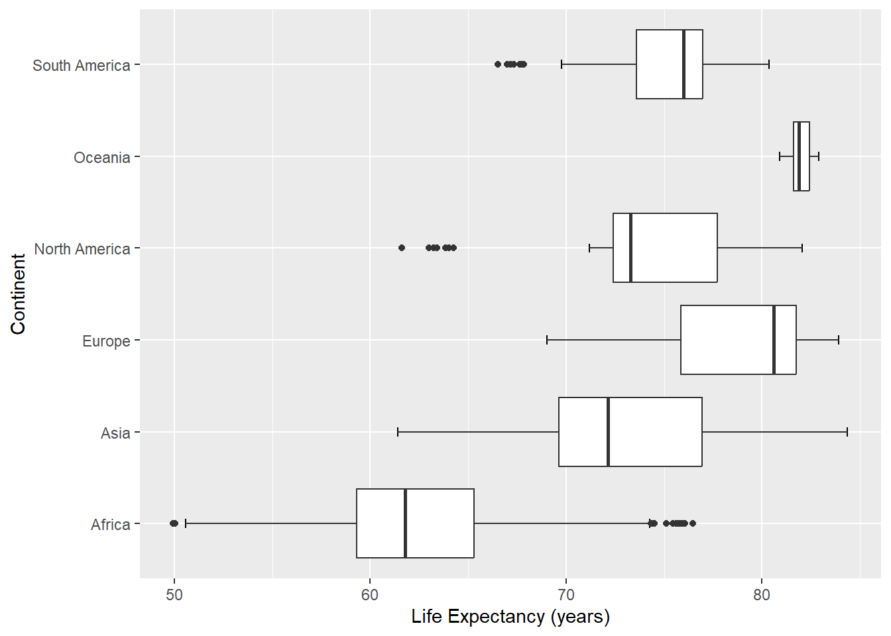
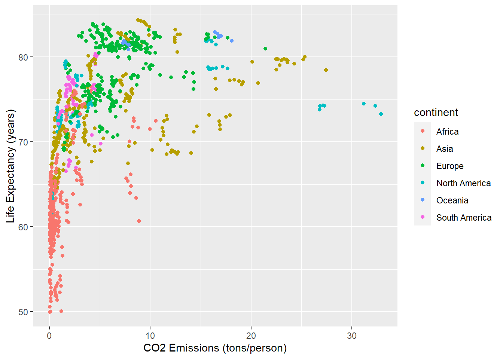
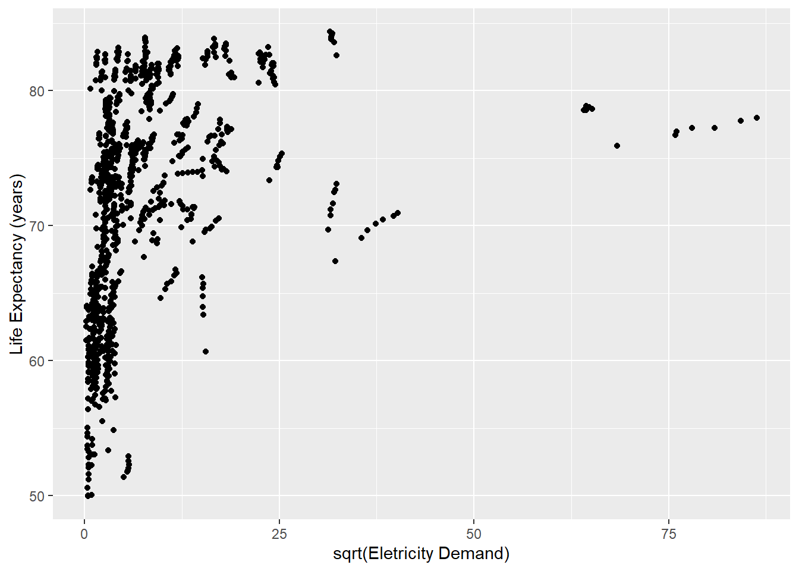

Os dados disponíveis no arquivo data/owid.csv foram obtidos do portal Our World in Data, cuja missão é publicar pesquisas e dados relacionados a grandes problemas mundiais como pobreza, doenças, fome, mudanças climáticas, guerras, riscos existenciais e desigualdade.
Os dados originais foram pré-processados no sentido de remover observações faltantes. Há um total de 985 observações coletadas para 21 variáveis:
continent: continente em que está o país
entity: nome do país
code: código do país
year: ano
birth_rate: número de nascimentos com vida por 1.000 habitantes na população.
child_mortality: mortes de crianças menores de 5 anos de idade (% nascimentos)
co2_emission_pc: emissões anuais de CO2 per capita (t/pessoa)
deaths_solid_fuels_pollution: mortes resultantes de poluição por queima de combustíveis sólidos em ambientes internos (%)
deaths_particulate_pollution: mortes resultantes de poluição por material particulado em ambientes externos (%)
deaths_air_pollution: mortes resultantes de poluição do ar ambiente (%)
deaths_ozone: mortes resultantes de poluição por ozônio em ambientes externos (%)
deaths_sanitation: mortes resultantes de falta ou precariedade de acesso a saneamento básico (%)
electricity_demand: geração total de eletricidade anual, ajustada por importação e exportação de eletricidade (TWh)
energy_use_pc: consumo de energia médio anual (eletricidade, transporte, aquecimento, preparo de alimentos) per capita (KWh/pessoa)
expected_schooling: expectativa do número de anos de educação que uma criança que entra no sistema escolar deve receber
happiness_cantril_ladder: nível de felicidade médio populacional (0-10)
gdp_pc: produto interno bruto per capita ($ internacional, referência 2017)
life_expectancy: expectativa de vida no nascimento (anos)
milk_consumption_pc: consumo de leite médio anual per capita (kg)
no_water: população sem acesso a fontes seguras de água (encanada, poços, fontes, chuva e envasada) (%)
urban_population_percent: população habitante de áreas urbanas (% população total)
Análise Exploratória de Dados
Conduza a análise exploratória da massa de dados owid, a fim de compreender suas características principais.
Voltaremos a utilizar essa massa de dados em atividades futuras.
continent country_code entity year
Length:985 Length:985 Length:985 Min. :2011
Class :character Class :character Class :character 1st Qu.:2014
Mode :character Mode :character Mode :character Median :2016
Mean :2016
3rd Qu.:2018
Max. :2019
birth_rate child_mortality co2_emission_pc
Min. : 5.92 Min. : 0.200 Min. : 0.02473
1st Qu.:11.20 1st Qu.: 0.580 1st Qu.: 0.76427
Median :18.40 Median : 1.610 Median : 2.77652
Mean :20.85 Mean : 3.049 Mean : 4.62566
3rd Qu.:28.75 3rd Qu.: 4.730 3rd Qu.: 6.63869
Max. :48.36 Max. :15.410 Max. :32.87282
deaths_solid_fuels_pollution deaths_particulate_pollution deaths_air_pollution
Min. : 0.00 Min. : 2.48 Min. : 2.66
1st Qu.: 0.28 1st Qu.: 20.18 1st Qu.: 29.95
Median : 11.21 Median : 34.35 Median : 80.30
Mean : 50.50 Mean : 44.52 Mean : 96.29
3rd Qu.: 92.63 3rd Qu.: 63.66 3rd Qu.:157.51
Max. :281.26 Max. :200.29 Max. :314.45
deaths_ozone deaths_sanitation electricity_demand energy_use_pc
Min. : 0.000 Min. : 0.00 Min. : 0.05 Min. : 180.9
1st Qu.: 0.750 1st Qu.: 0.05 1st Qu.: 6.16 1st Qu.: 3623.2
Median : 1.410 Median : 0.56 Median : 16.21 Median : 15302.4
Mean : 2.115 Mean : 14.74 Mean : 167.62 Mean : 25020.4
3rd Qu.: 2.220 3rd Qu.: 22.27 3rd Qu.: 87.37 3rd Qu.: 33744.6
Max. :35.430 Max. :158.41 Max. :7444.69 Max. :188294.0
expected_schooling happiness_cantril_ladder gdp_pc life_expectancy
Min. : 4.983 Min. :2.567 Min. : 729.7 Min. :49.95
1st Qu.:11.455 1st Qu.:4.517 1st Qu.: 4776.6 1st Qu.:65.46
Median :13.720 Median :5.302 Median : 13086.0 Median :73.57
Mean :13.535 Mean :5.403 Mean : 19954.6 Mean :71.96
3rd Qu.:15.585 3rd Qu.:6.208 3rd Qu.: 29877.0 3rd Qu.:78.41
Max. :23.089 Max. :7.856 Max. :116283.7 Max. :84.36
milk_consumption_pc no_water urban_population_percent
Min. : 0.1835 Min. : 0.000 Min. : 11.78
1st Qu.: 19.3253 1st Qu.: 0.230 1st Qu.: 42.73
Median : 74.3830 Median : 2.930 Median : 60.31
Mean : 94.2947 Mean : 8.778 Mean : 59.32
3rd Qu.:153.9104 3rd Qu.:15.360 3rd Qu.: 77.38
Max. :364.5135 Max. :52.050 Max. :100.00
Note que para várias colunas há um intervalo muito grande entre o terceiro quartil e o valor máximo, o que pode indicar outliers nos dados disponíveis. Semelhantemente para algumas colunas com deaths_particulate_pollution, deaths_air_pollution e energy_use_pc há um grande intervalo entre o valor mínimo e o primeiro quartil, indicando a exsitência de mais outliers.
Resumos gráficos de life_expectancy, possível variável de respota.
O gráfico de densidade de kernel ajuda a visualizar melhor os picos de espectativa de vida entre 70 e 80 anos, maior de todos e outros menores por volta dos 55, 65 e 85.
ggplot(owid, aes(x = life_expectancy, y ="")) +geom_errorbar(stat ="boxplot", width =0.1) +geom_boxplot () +geom_rug(alpha =0.5) +labs(y ="", x ="Life Expectancy (years)")
Resumos gráficos multidimensionais
ggplot(owid, aes(x = life_expectancy, y = continent)) +geom_errorbar(stat ="boxplot", width =0.1) +geom_boxplot() +labs(x ="Life Expectancy (years)", y ="Country")

ggplot(owid, aes(y = life_expectancy, x = co2_emission_pc)) +geom_point(aes(color = continent)) +labs(y ="Life Expectancy (years)", x ="CO2 Emissions (tons/person)")

ggplot(owid, aes(y = life_expectancy, x = electricity_demand)) +geom_point() +labs(x ="Log2(Eletricity Demand)", y ="Life Expectancy (years)")
ggplot(owid, aes(y = life_expectancy, x =1/electricity_demand)) +geom_point() +labs(x ="Log2(Eletricity Demand)", y ="Life Expectancy (years)")
ggplot(owid, aes(y = life_expectancy, x =sqrt(electricity_demand))) +geom_point() +labs(x ="Log2(Eletricity Demand)", y ="Life Expectancy (years)")

ggplot(owid, aes(y = life_expectancy, x =log2(electricity_demand))) +geom_point() +labs(x ="Log2(Eletricity Demand)", y ="Life Expectancy (years)")